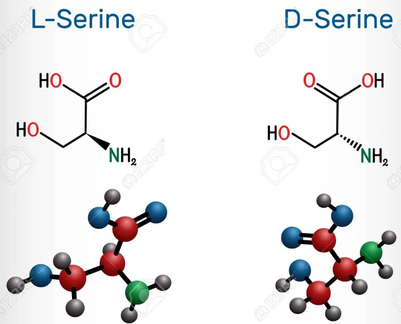

Isomeros
La L-serina es el isómero más común y se encuentra en la naturaleza como uno de los aminoácidos constituyentes de las proteínas. Tiene la configuración de grupos funcionales en sentido contrario a las agujas del reloj alrededor del carbono asimétrico. La D-serina, por otro lado, tiene la configuración de grupos funcionales en el sentido de las agujas del reloj alrededor del carbono asimétrico. Aunque no es tan común como la L-serina, la D-serina desempeña un papel importante como neurotransmisor en el sistema nervioso central.

Propiedades
La serina es un aminoácido que presenta varias propiedades y características importantes. A continuación, se enumeran algunas de las propiedades de la serina:
| iupac | (2s)-2-amino-3-hydroxipropanoic acid |
| molecular weight | 105,093 g/mol |
| chemical formula | C3H2NO3 |
| energy | 169,406 (kJ/mol) |
| dipole moment | 1,111 |
| number of atoms | 14 |